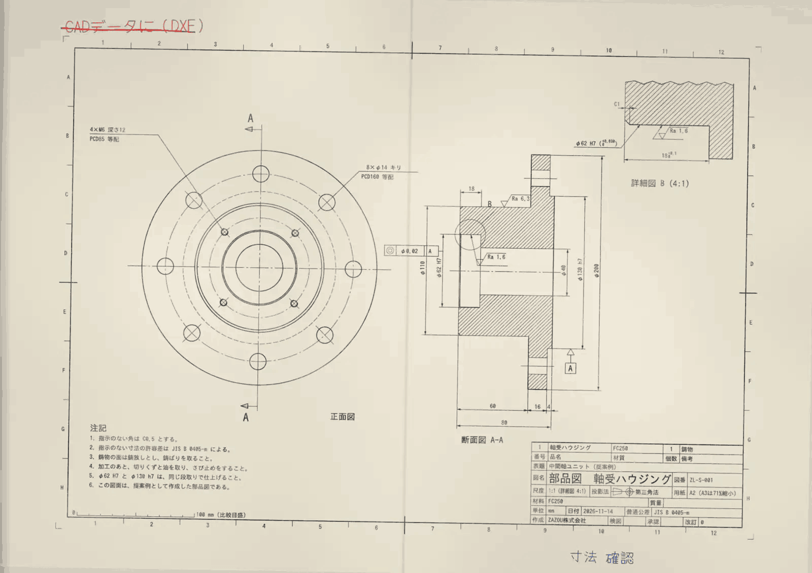
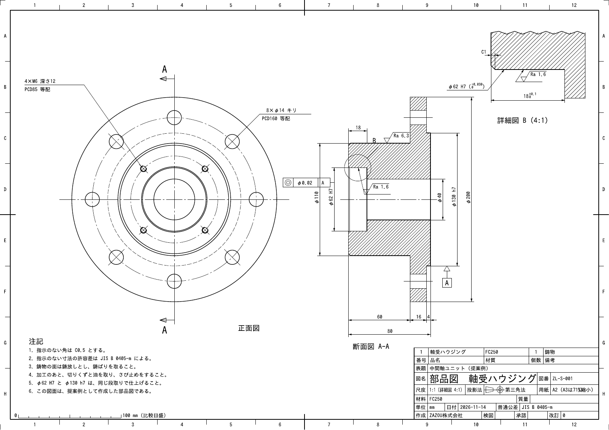
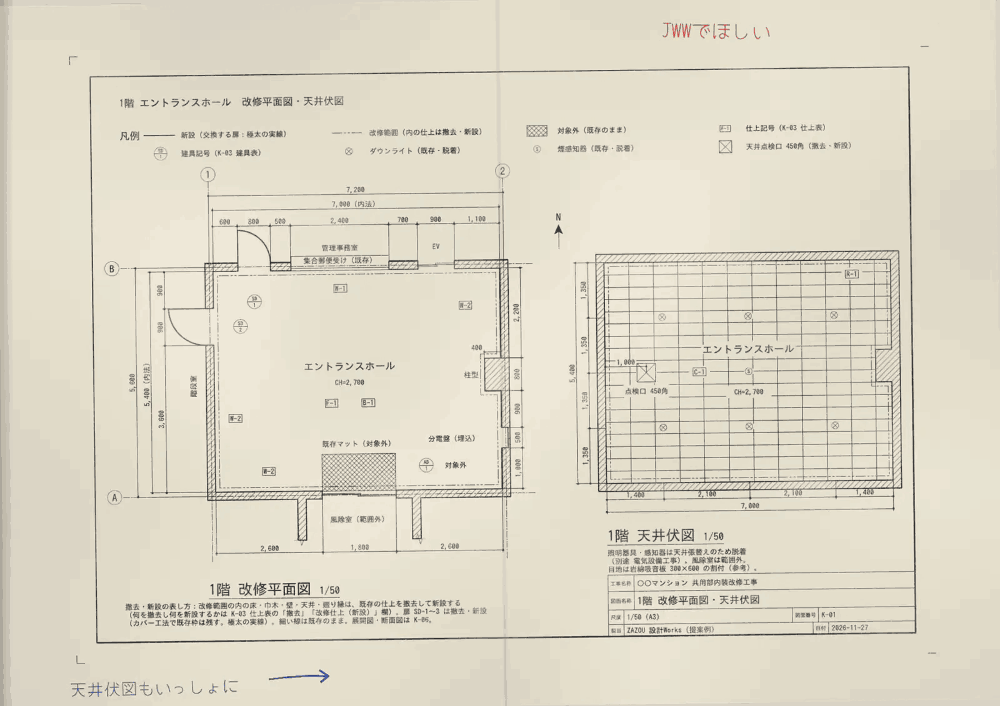
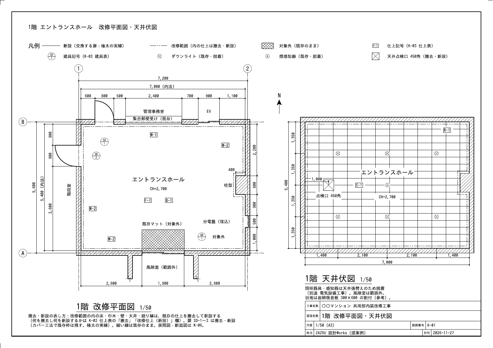
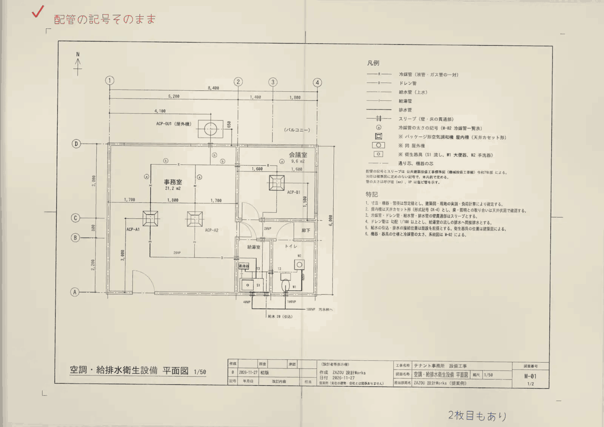
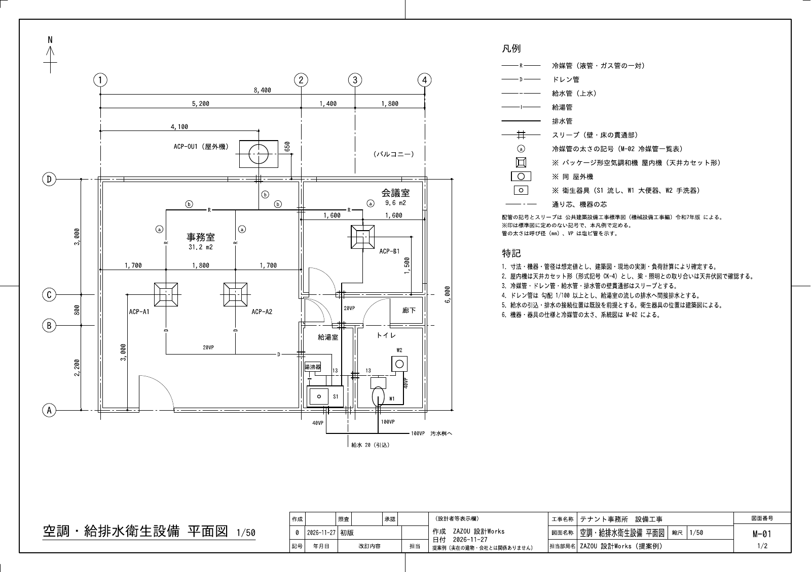

- PDF・画像から
- DXF・JWW・PDF
- 在宅・全国対応
図面のトレース
1枚 6,000円
PDF・画像・手書き・古いCADの図面を、CADデータに描き直します。
機械・建築・土木・設備の図面に対応します。
DXFの文字化けも修正します。
どんなお悩み事もご相談ください。
Summary
このページの要点
- 料金
- 図面のトレースは 1枚 6,000円（お見積りは無料）
- 元にできる図面
- PDF・画像・手書き・JWW・DXF・DWG
- 納品の形式
- DXF（AutoCAD向け・Jw_cad向け）・JWW・PDF
- 納期
- ご相談ください（枚数と内容で変わります）
- 分野
- 機械・建築・土木・設備の図面
- ご相談
- LINE・メール。
在宅・全国対応
What is Tracing
図面のトレースとは
図面のトレースとは、PDF・画像・手書き・古いCADの図面を、CADで描き直して、編集できるCADデータにすることです。
図面トレース・図面のCAD化・CADトレースとも呼ばれます。
線を写すだけでなく、寸法・文字・レイヤーを整えて、そのまま修正や作図に使えるデータにします。
こんなときに
- スキャンしたPDFの図面しか残っておらず、CADで直せない
- PDFの図面しかなく、編集できるデータがほしい
- 手書きの図面・スケッチを、CADの図面に清書したい
- Jw_cad の図面を DXF で渡したい、DXF の図面を JWW で使いたい
- 受け取った DXF の文字が化けて読めない
Sample
スキャンしたPDFの図面と、CADデータにした図面（見本）
スキャンしたPDFの図面と、CADデータにした図面を並べた見本です。
どちらも当方で作成した見本で、お客様の図面ではありません。
スキャンしたPDFの図面は、見本の図面を印刷してスキャンしたように加工した画像です。
画像を押すと拡大します。
機械図面（部品図）


建築図面（改修平面図・天井伏図）


設備図面（空調・給排水衛生設備 平面図）


Price
料金
図面の大きさ・枚数・お急ぎの場合の扱いは、ご相談ください。
お見積りは無料です。
| 内容 | 料金 |
|---|---|
| 図面のトレース | 1枚 6,000円 |
| 図面が大きい・枚数が多い・お急ぎ | ご相談ください。 |
| DXFの文字化けの修正、JWW・DXF の変換だけ | 内容を拝見してお見積りします。 お見積りは無料です。 |
Source & Format
元にできる図面と、納品の形式
| 元の図面 | 送り方 |
|---|---|
| スキャンした図面 | PDFか、スマホで撮った写真（JPG）でお送りください。 |
| A1・A2などの大きい図面 | スマホで何枚かに分けて撮った写真（JPG）でも大丈夫です。 全体を1枚と、細かい所を近くから何枚か撮っていただければ、こちらでつなげて描き直します。 |
| PDFの図面 | PDFのままお送りください。 |
| 画像の図面 | JPG・PNG などの画像をお送りください。 |
| 手書きの図面・スケッチ | 寸法の数字が読めるように、写真かスキャンでお送りください。 |
| JWW（Jw_cad の図面） | ファイルのままお送りください。 |
| DXF・DWG | ファイルのままお送りください。 文字化けした DXF も、そのままで大丈夫です。 |
| 納品の形式 | こんな方に |
|---|---|
| DXF（AutoCAD向け） | AutoCAD など、DXF を読めるCADでお使いの方へ。 |
| DXF（Jw_cad向け） | Jw_cad で開いたときに文字が化けないよう、文字コードと書体を合わせてお出しします。 |
| JWW | Jw_cad の図面としてそのまま開けます。 |
| 印刷や、仕上がりの確認にお使いください。 |
お使いのCADをお知らせいただければ、それに合う形式でお渡しします。
DXFの文字化けも修正します。
Checklist
ご相談のときに、分かる範囲でお知らせください
分からない項目は、空欄のままで大丈夫です。
図面を拝見して、こちらからご質問します。
- 図面の種類（機械・建築・土木・設備）
- 枚数と、用紙の大きさ（A3・A1 など）
- お使いのCAD（AutoCAD・Jw_cad など）と、ご希望の納品形式
- ご希望の納期
- レイヤー分け・線の色・文字の大きさなどの決まり（あれば）
Process
進め方と納期
ご依頼は整理されていなくても大丈夫です。
分かること・分からないことをこちらでまとめて進めます。
- ご相談LINE かメールで、図面の種類、枚数、ご希望の納期をお知らせください。
- 資料の確認元の図面（PDF・画像など）を拝見し、不明な点をまとめてご質問します。
- お見積り（無料）枚数と内容からお見積りします。
時間単価でもお受けできます。 - 作成・検図描いたあと、寸法・文字・注記の抜けを確かめてからお出しします。
- 修正・納品ご確認いただき、修正を反映して DXF・JWW・PDF でお渡しします。
納期はご相談ください。
枚数と内容によって変わります。
ご相談のときにご希望の納期をお知らせいただければ、資料を拝見して先にお伝えします。
Fields
分野ごとの窓口
分野ごとの図面の決まりと見本は、それぞれの窓口のページにあります。
見本は、対応できる内容の一例として作った提案例です。
 建築・土木
建築・土木 設備設計
設備設計FAQ
図面のトレースのよくある質問
図面のトレースの料金はいくらですか？
図面のトレースは1枚 6,000円です。
図面の大きさや枚数、お急ぎの場合の扱いは、ご相談ください。
お見積りは無料です。
どんな図面からトレースできますか？
PDF・JPGなどの画像（スキャンやスマホの写真）・手書きの図面から、CADデータに描き直します。
JWW・DXF・DWG の図面も元にできます。
納品のデータ形式は何ですか？
DXF・JWW・PDF で納品します。
DXF は、AutoCAD 向けと Jw_cad 向けのどちらでもお出しできます。
お使いのCADをお知らせください。
図面1枚だけでも頼めますか？
はい、図面1枚からお受けします。
DXFの文字化けも直せますか？
はい、DXFの文字化けも修正します。
文字化けしたDXFをそのままお送りください。
元の図面が古くて、読めない所があっても大丈夫ですか？
読めない所や分からない所は、まとめてご質問します。
寸法の分かる資料がほかにあれば、あわせてお送りください。
納期はどのくらいですか？
枚数と内容によって変わるため、ご相談ください。
ご相談のときにご希望の納期をお知らせいただければ、資料を拝見して先にお伝えします。
修正は何回までお願いできますか？
修正の回数は、ご依頼の内容に合わせて決めますので、ご相談ください。
秘密保持契約（NDA）は結べますか？
はい、秘密保持契約に対応しています。
お預かりした図面・資料は、ご依頼の作業にだけ使います。
遠くの地域からでも頼めますか？
はい。
在宅・オンラインで、全国からのご依頼をお受けしています。
図面はメールや LINE でお送りください。
Company
会社概要
| 会社名 | ZAZOU株式会社 |
|---|---|
| 部門 | ZAZOU 設計Works（機械設計／建築・土木／設備設計） |
| お受けする仕事 | 図面のトレース（PDF・画像・手書き・古いCADの図面から、CADデータに） |
| 代表 | 代表取締役 松村 貴士 |
| 設立 | 2020年6月 |
| 所在地 | 滋賀県蒲生郡日野町 |
| 対応地域 | 全国（在宅・オンラインで対応） |
Contact
ご相談・お問い合わせ
図面1枚のトレースから、お気軽にどうぞ。
お見積りは無料です。
DXFの文字化けも修正します。
どんなお悩み事もご相談ください。

図面のPDFや写真がある場合は、メールが便利です。
matsumura.takashi@zazoucorp.com